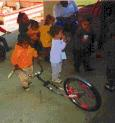
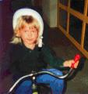
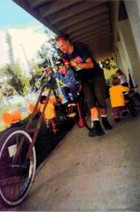
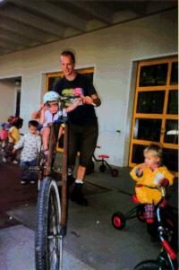
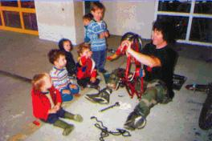
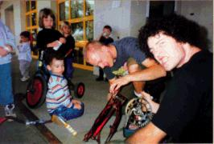
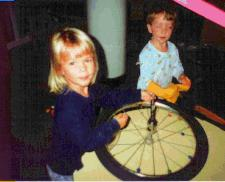
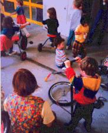

|  |
Save the children! Kids love to ride bikes, and they love to Fuck Up Stuff. They know innately that nothing feels better than combining the two. Why is it, then, that as soon as they're a little older, most of them don't give a shit about bikes anymore, and instead want to drive cars? It's because they're brainwashed by the corporate slimelordz, that's why. |
 |
 
Well, Chunk 666 endeavors to safeguard the stability of the gene pool by ensuring that future generations remain excited by bikes. We start early. Most of these larvae barely have the agility to handle a little trike, let alone a chopper, so we have to push them around until they're hooked.
 
We also provide valuable education about the simple and elegant guts of the bicycle. This will soon provide us with the fringe benefit of an army of tiny workers. Most of them are coordinated enough to disassemble things, and those who aren't can always pump up tires or lubricate chains. It will really speed things up at the lab, and they hardly eat at all!
 
(Return to C.H.U.N.K. Operations)
| Copyright 2003 Megulon Five <megulon5@dclxvi.org>. |
|
This work is licensed under a Creative Commons License. | Last modified 12 September 1999. |